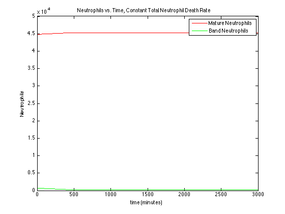
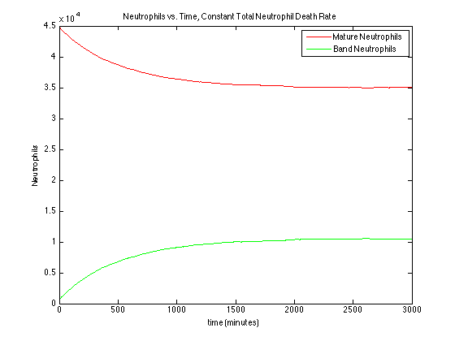
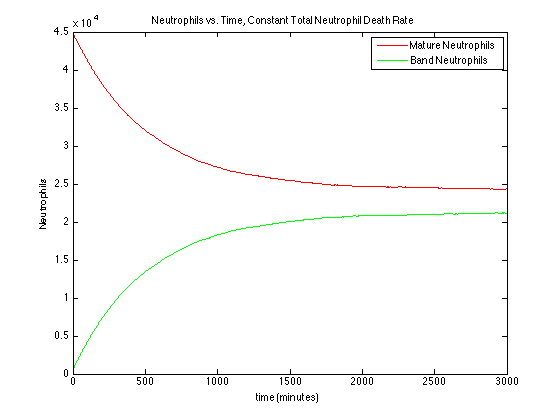
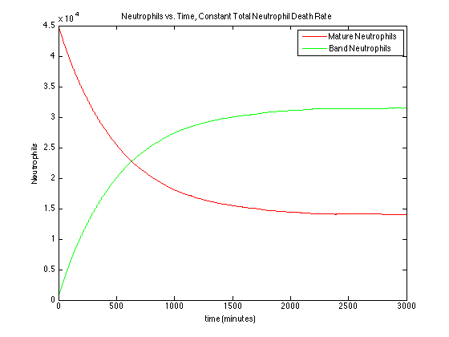
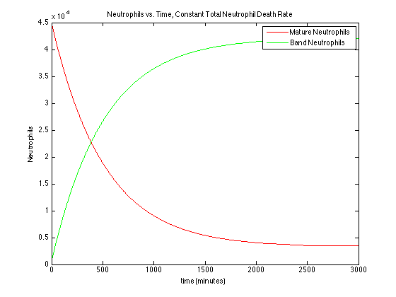

%Initial 1 Compartment Model of Neutrophil Maturation and Death. The model %starts by adding a set number of cells to a blood compartment, allows some %young neutrophils to mature to old, and then removes a set number of cells %from the population (death). This code was written by Mark Kalinich on 20140225. %Differential Equation Model: %d(New)/dt = R_production,new - R_death,old - R_maturation %d(Old)/dt = R_production,old - R_death,old + R_maturation %for Steady state: 0=R_production,old - R_death,old + R_maturation %0 = (Cell Production rate)*(Old Fraction)-(Total Death)*(Old/(Old+New) %for only old cells: %0 = Cell Production Rate - Total Death Rate %For Only Young Cells: %Model Assumptions: %1) Constant rate of total cell production from bone %2) constant ratio of old to new neutrophils in the bone %3) random selection of neutrophils from bone %4) Constant fraction of young neutrophils mature into old neutrophils %5) Constant rate of total cell death (Death_old = Constant*(# dead cells) %6) Cell death is not dependent on cell age %7) R_production is a binomial random variable that uses the specified %fraction of old vs. new cells. (R_production_total= constant = R_new+R+old) %8) Person weighs 70 kg. clc; clear; %Step 1: Write up our source. We're creating an infinite sink that has a %set ratio of young and old neutrophils. %First, let's set our intial conditions. All values are per day. for j = 1:5 time = 1:3000; %number of time steps, in minutes Weight = 70; %person's weight, in kg Neutrophil_blood = 65*10^7*Weight; %neutrophils initially in blood pool for a 70 kg person, "Neutrophil kinetics in health and disease" Summers 2010 Band_Fraction = 0.015; % For an uninfected person, bands range from 0-3% in blood http://www.nlm.nih.gov/medlineplus/ency/article/003657.htm Young_initial = Neutrophil_blood*Band_Fraction; % initial number of bands in the pool Old_initial = Neutrophil_blood*(1-Band_Fraction);% initial number of mature cells in pool Cells_Entering_System = 1.7*10^9*Weight; %this is the number of cells entering from bone marrow per day "Neutrophil kinetics in health and disease" Summers 2010 Young_fractionv = linspace(0,1,5); %fraction in bone that is young Young_fraction = Young_fractionv(j); % select Bone neutrophil fraction I'm exploring Mature_probability = 0.2; %fraction of band cells in blood that will mature after 1 day Death_Leaving_System = 1.7*10^9*Weight; %assume steady state Band_Mature = .1; %fraction of bands that will mature in 1 day in the blood Mean_residence_time = Neutrophil_blood/Cells_Entering_System; %Add in conversions to get proper rates. Time_Convert = 1440; %minutes/day Cell_Convert = 1*10^6; %convert cells to millions of cells Cell_Enter = round(Cells_Entering_System/(Time_Convert*Cell_Convert)); Mature_Prob = Mature_probability/Time_Convert; %fraction of band cells that matures into an old cell in 1 minute. Death = round(Death_Leaving_System/(Time_Convert*Cell_Convert));% number of cells to die each cycle; assume steady state %Initialize some Vectors Neutrophil_Count = zeros(length(time)+1,2); %initialize solution vector Neutrophil_Count(1,1) = Young_initial/Cell_Convert; %young is left Neutrophil_Count(1,2) = Old_initial/Cell_Convert; %old is right for i = 1:length(time) %Step 1: randomly select cells from the bone marrow to add to the blood %population. Random = rand(Cell_Enter,1) ; %random is a vector containing "Enter" number of %values that will represent each cell's random assignment to either "old" %or "young" Young_enter = length(find(Random<Young_fraction)); Old_enter = length(find(Random>Young_fraction)); %initalize young and old counters %Step 2: add these to the blood pool. dB_Young = Young_enter + Neutrophil_Count(i,1); %total young in blood pool at t dB_Old = Old_enter + Neutrophil_Count(i,2); %total old in blood pool at t % Step 3: Allow young cells to mature into old cells. dOld = Mature_Prob*dB_Young; dB_Young = dB_Young - dOld; dB_Old = dB_Old + dOld; %Step 4: Kill some cells. %Write out how many will die. %Assume that new and old have an equal probability of dying Dead_Young = Death*(dB_Young)/(dB_Young+dB_Old); Dead_Old = Death*(dB_Old)/(dB_Young+dB_Old); dB_Young = round(dB_Young - Dead_Young); dB_Old = round(dB_Old - Dead_Old); Neutrophil_Count(i+1,1) = dB_Young; Neutrophil_Count(i+1,2) = dB_Old; end fig = figure; plot(time,Neutrophil_Count(1:length(time),2),'r'); hold on plot(time,Neutrophil_Count(1:length(time),1),'g'); xlabel ('time (minutes)') ylabel ('Neutrophils') title ('Neutrophils vs. Time, Constant Total Neutrophil Death Rate') legend ('Mature Neutrophils','Band Neutrophils') saveas(fig,strcat('Neutrophil_Kinetics_Bone_Neutrophil_Fraction=_',num2str(Young_fractionv(j))),'jpeg') end    